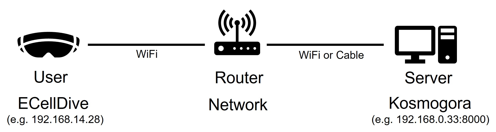
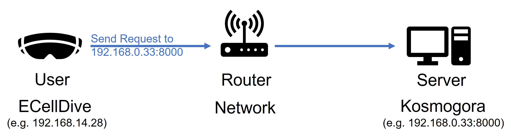

Connecting to Kosmogora
Kosmogora is the data manager system that we use in this project to import data, request calculations and save modification files.
Access to Kosmogora is mandatory to use the main features of ECellDive. The basic idea is that the computer (server) running an instance of Kosmogora must be on the same Local Area Network (LAN) as the user in ECellDive (the headset is also connected to the LAN). A possible setup is the following:
Here, a user is connected to the network with IP(v4) address 192.168.14.28; and the server machine is connected with IP(v4) address 192.168.0.33 with the instance of Kosmogora accessible through port 8000.
Therefore, when a user needs to make a request to Kosmogora in order to, for example, import data, he must input the correct address (192.168.0.33) and port (8000) in the corresponding fields